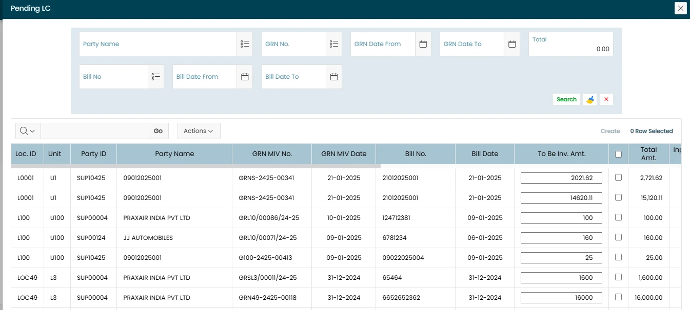
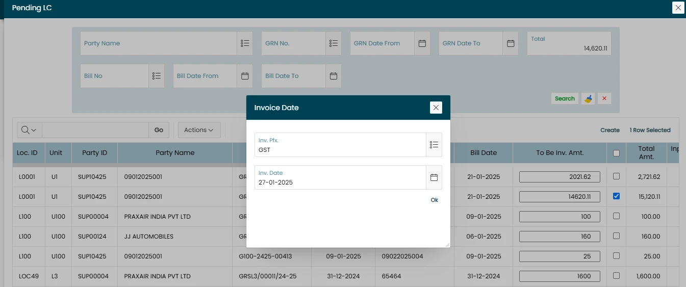
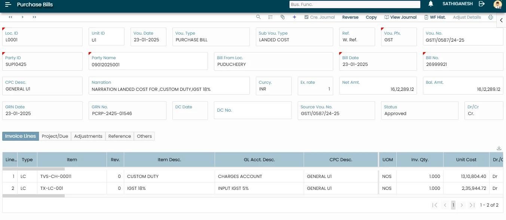

<div data-category="Financials" data-title="Landed Cost" data-updated="December 01, 2025" data-contributors="RoadmapIT" data-breadcrumb="Home,Financials,Landed Cost">
  <div class="page-content">
    <p>Landed cost is the total cost of a product when it arrives at its destination after being shipped from a supplier. It includes the original price of the product, plus any shipping, insurance, customs, and other fees that are incurred along the way, Landed cost can be calculated using the following formula:</p>
    <p>Landed cost = Product cost + Shipping cost + Customs cost + Risk cost + Overhead cost</p>
    <p>This screen used to list out the Landed Cost Bills.</p>
    <h5>Navigation path:</h5>
    <p class="fs-6">Financials \ Transactions \ Party Documents \ Purchase Bills</p>
    
    <ul style="list-style-type: none; align-content: center">
      <li class="mouse-icon">Select the Respective Landed Cost invoice.</li>
      <li class="mouse-icon">Select the create button.</li>
    </ul>
    
    <ul style="list-style-type: none; align-content: center">
      <li class="mouse-icon">Select InvPfx.</li>
      <li class="mouse-icon">Select Inv.Date.</li>
      <li class="mouse-icon">Click ok.</li>
    </ul>
    <h2>Registering Invoice for Landed Cost</h2>
    
    <ul style="list-style-type: none; align-content: center">
      <li class="mouse-icon">Click on create journal to view the journal/directly click post button, journal is created automatically and it will be posted.</li>
      <li class="mouse-icon">Press the post button to complete the entry and the document can be forwarded for approval.</li>
    </ul>
  </div>
</div>